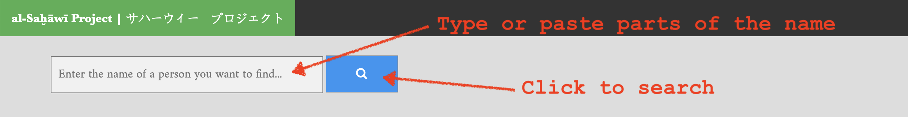

How To Use?
Step 1
Type in or copy/paste a name into the search window to search for matches.
Step 2
Matches will be shown in as a list of results. Each match begins with the unique ID; you can click on the link at the end of the match to check the complete biography. Every time you click on the search button a unique ID will be generated: you should use these IDs if you need to assign one to a new person that you identified.
Step 3
You can always check a complete biography for more details.
Data
The current data is generated automatically from a version of al-Saḫāwī’s al-Ḍawʾ al-lāmiʿ, which is available in OpenITI (repository 0925AH: 0902Sakhawi.DawLamic.JK003608-ara1.mARkdownSimple).